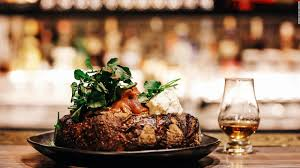

A quality and relaxing rural country pub, run by award winning owners. The building and decor are charming and rustic, with elegant modern touches. A daily menu, all freshly prepared in the pub kitchen, includes fresh fish, pies, steaks and chef's daily specials with main course prices ranging from £11.50 - £19.50. As all dishes are prepared in the pub kitchen, they are able to cater for most dietary needs, with most sauces, soups and gravy all created gluten free.
Reservation
Gallery

Our Services
Breakfast
Lunch
Dinner
Beverages
Dishes
With its romantic ambiance and superb food offering, the recently opened Papaya invites you to savor the best of Italy in Old San Juan. The place has a quiet, old world
environment that complements perfectly the wonderful variety of
traditional Italian dishes that are the main attraction in the restaurant,
served by a knowledgeable and friendly staff. Starters include an array
of traditional antipasto ingredients, a new twist on seafood favorites or
salads.